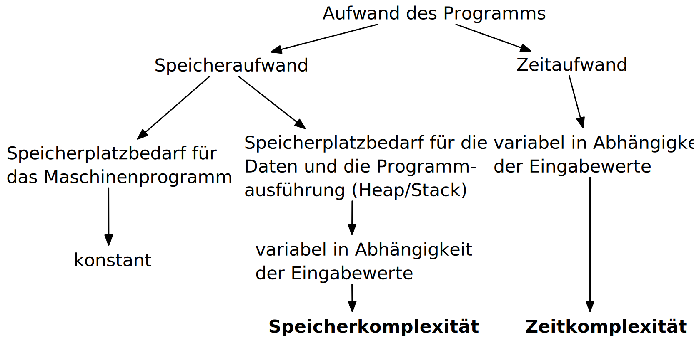

Analyse des Aufwands zur Berechnung von Ergebnissen ist wichtig ...
im Design,
in der Auswahl
und der Verwendung von Algorithmen.
Für relevante Algorithmen und Eingangsdaten können Vorhersagen getroffen werden:
Um Zusammenhänge sind zwischen Eingangsdaten und Aufwand zu finden.
Aufwand kann Rechenzeit, Speicherbedarf oder auch Komponentennutzung sein.
Der Rechenaufwand ist häufig zentral und wird hier betrachtet, die Verfahren sind aber auch für weitere Ressourcen anwendbar.
Die Vorhersagen erfolgen über asymptotische Schätzungen
mit Hilfe der Infinitesimalrechnung,
durch Kategorisierung im Sinne des Wachstumsverhaltens,
damit ist oft keine exakte Vorhersage möglich.
Unterschiedliche Systeme sind unterschiedlich schnell, relativ dazu wird es interessant.
Im Folgenden geht es um:
die Beschreibung des asymptotischen Wachstumsverhaltens
die Analyse von iterativen Algorithmen
die Analyse von rekursiv teilenden Algorithmen
Die Infinitesimalrechnung bezeichnet die Differenzial- und Integralrechnung. Es wird mit unendlich kleinen Größen gerechnet.
Entwurf von Algorithmen: Dynamische Programmierung
Der folgende Abschnitt behandelt die dynamische Programmierung, um ein Problem effizient zu lösen. Er zeigt gleichzeitig wie die Wahl des Algorithmus und der Implementierung die Laufzeit dramatisch beeinflussen kann.
Übung
Berechnung der Fibonacci-Zahlen
Implementieren Sie eine rekursive Funktion, die die \(n\)-te Fibonacci-Zahl berechnet!
Bis zu welchem \(n\) können Sie die Fibonacci-Zahlen in vernünftiger Zeit berechnen (d. h. < 10 Sekunden) ?
Bestimmung einer Menge \(T\), die alle Teilprobleme von \(P\) enthält, auf die bei der Lösung von \(P\) – auch in tieferen Rekursionsstufen – zurückgegriffen wird.
Bestimmung einer Reihenfolge \(T_0 , \ldots, T_k\) der Probleme in \(T\), so dass bei der Lösung von \(T_i\) nur auf Probleme \(T_j\) mit \(j < i\) zurückgegriffen wird.
Sukzessive Berechnung und Speicherung von Lösungen für \(T_0 ,...,T_k\).
Beispiel: Berechnung der Fibonacci-Zahlen mit dynamischer Programmierung
Rekursive Definition der Fibonacci-Zahlen nach gegebener Gleichung.
\(T = { f(0),..., f(n-1)}\)
\(T_i = f(i), i = 0,...,n – 1\)
Berechnung von \(fib(i)\) benötigt von den früheren Problemen nur die zwei letzten Teillösungen \(fib(i – 1)\) und \(fib(i – 2)\) für \(i \geq 2\).
Lösung mit linearer Laufzeit und konstantem Speicherbedarf
Beispiel: (\(b_n\)) : \(b_n = n^2\) für \(n \in~\mathbb{N}\)
Eine rekursive Definition ist eine Definition, die sich auf sich selbst bezieht. Häufiger schwieriger zu analysieren. Die explizite Definition ist eine direkte Zuweisung und meist die beste Wahl.
Folgen und Laufzeiten
Die explizite Definition von Laufzeiten ist zur Auswertung vorzuziehen.
Die rekursive Definition tritt oft bei rekursiven Verfahren auf, und sollte dann in eine explizite Definition umgerechnet werden.
Berechnung der Anzahl der Schritte zum Lösen der Türme von Hanoi.
Türme von Hanoi mit 3 Scheiben.
Die Türme von Hanoi (ChatGPT)
Die Türme von Hanoi sind ein klassisches mathematisches Puzzle. Es besteht aus drei Stäben und einer bestimmten Anzahl von unterschiedlich großen Scheiben, die anfangs alle in absteigender Reihenfolge auf einem Stab gestapelt sind – der größte unten und der kleinste oben.
Das Ziel des Spiels ist es, alle Scheiben auf einen anderen Stab zu bewegen, wobei folgende Regeln gelten:
Es darf immer nur eine Scheibe auf einmal bewegt werden.
Eine größere Scheibe darf nie auf einer kleineren liegen.
Alle Scheiben müssen auf den dritten Stab bewegt werden, indem sie über den mittleren Stab verschoben werden.
Laufzeit der Lösung der Türme von Hanoi
Für die Lösung sind für jeden Ring \(n\) die folgenden \(a_n\) Schritte erforderlich:
Alle \(n-1\) kleineren Ringe über Ring \(n\) müssen mit \(a_{n-1}\) Schritten auf den Hilfsstab.
Der Ring \(n\) kommt auf den Zielstab mit einem Schritt.
Alle \(n-1\) Ringe vom Hilfsstab müssen mit \(a_{n-1}\) Schritten auf den Zielstab.
Bei nur einem Ring ist \(a_1 = 1\) und sonst \(a_n = a_{n-1} + 1+ a_{n-1} = 2a_{n-1} + 1\).
Die Folge konvergiert gegen 0, da der Zähler gegen 0 strebt (\(\lim_{{n \to \infty}} {( 1/n)} = 0\) und \(\lim_{{n \to \infty}} {( 1/n^3)} = 0\)) und der Nenner konstant ist.
Die allgemeine Vorgehensweise ist es, die größte Potenz im Zähler und Nenner zu finden und dann diese auszuklammern. Im zweiten Schritt kürzen wir dann. In diesem Fall ist es \(n^3\).
D. h. das Ziel ist es den Ausdruck so umzuformen, dass der Grenzwert direkt abgelesen werden kann. Dies ist inbesondere dann der Fall, wenn \(n\) nur noch im Nenner oder Zähler steht.
Analyse des asymptotischen Verhaltens
Wir möchten \(f(x) = \frac{\ln(x)}{x^{2/3}}\) für \(x \to \infty\) untersuchen.
Die Regel von L'Hôpital ermöglicht es Grenzwerte von Ausdrücken des Typs \(\frac{0}{0}\) oder \(\frac{\infty}{\infty}\) zu berechnen. In diesem Fall nehmen wir die Ableitungen des Zählers und des Nenners.
Die Regel besagt:
Falls \(\lim_{x \to a} \frac{f(x)}{g(x)}\) den unbestimmten Ausdruck \(\frac{0}{0}\) oder \(\frac{\infty}{\infty}\) ergibt, dann gilt:
Wenn eine Funktion \(f\) in der Menge \(O(g)\) (d. h. \(f \in O(g)\)) ist, dann wächst die Funktion \(g\) mindestens genauso schnell wie die Funktion \(f\). Wächst \(g(n)\) asymptotisch schneller, dann ist \(f(n)/g(n)\) für \(n \to \infty\) in diesem Falle 0; wachsen beide gleich schnell, dann ist es eine Konstante \(c\).
Die Verwendung der O-Notation zur Beschreibung der Komplexität von Algorithmen wurde von Donald
E. Knuth eingeführt.
Alternative Schreibweisen
Insbesondere für die obere Abschätzung \(O(g)\) gibt es eine alternative Schreibweise:
\begin{equation*}
f(n) \in O(g(n)) \Leftrightarrow \exists c_0, n_0 \forall n : n > n_0 \Rightarrow f (n) \leq c_0· g(n)
\end{equation*}
D. h. ab einem Wert \(n_0\) liegt die Funktion \(f\) unter dem \(c_0\)-fachen der Funktion \(g\).
Wähle (exemplarisch): \(c_0 = 5\) und \(n_0 = 7\) sowie \(g(n) = n\).
Verstehen von Aufwandsklassen
Häufige Vergleichsfunktionen sind zum Beispiel Monome wie \(n^k\) für \(k \in \mathbb{N}_0\).
Achtung bei asymptotischen Abschätzungen
Asymptotische Laufzeitabschätzungen können zu Missverständnissen führen:
Asymptotische Abschätzungen werden nur für steigende Problemgrößen genauer, für kleine Problemstellungen liegt oft eine ganz andere Situation vor.
Asymptotisch nach oben abschätzende Aussagen mit \(O(g)\)-Notation können die tatsächliche Laufzeit beliebig hoch überschätzen, auch wenn möglichst scharfe Abschätzungen erwünscht sein sollten, gibt es diese teilweise nicht in beliebiger Genauigkeit, oder sind nicht praktikabel.
Nur Abschätzungen von gleicher Ordnung \(\Theta (g)\) können direkt verglichen werden, oder wenn zusätzlich zu \(O(g)\) auch \(\Omega (h)\) Abschätzungen vorliegen.
Übung
Gegenseitige asymptotische Abschätzung I
Bestimmen Sie welche Funktionen sich gegenseitig asymptotisch abschätzen:
Anzahl der Eingabewerte: \(f(x_1, x_2, . . . , x_n)\)
Aufwand - Übersicht

Algorithmen - Zeitaufwand
Tatsächlicher Zeitaufwand hängt vom ausführenden Rechnersystem ab.
Beeindruckende Entwicklung der Rechentechnik.
Größere Probleme können gelöst werden.
Langsamere Algorithmen bleiben langsamer auch auf schnellen Systemen.
Eine möglichst sinnvolle Annahme eines Rechnersystems gesucht:
Von-Neumann System
mit einer Recheneinheit
genaue Geschwindigkeit nicht relevant.
Die Komplexität eines Problems zu bestimmen ist oft ausgesprochen schwierig, da man hierfür den besten Algorithmus kennen muss. Es stellt sich dann weiterhin die Frage wie man beweist, dass der beste Algorithmus vorliegt.
Bei vielen Komplexitätsanalysen steht die Zeitkomplexität im Vordergrund.
Die Zeitkomplexität misst nicht konkrete Ausführungszeiten (z. B. 1456 ms), da die Ausführungszeit von sehr vielen Randbedingungen abhängig ist, die direkt nichts mit dem Algorithmus zu tun haben, z. B.:
Prozessortyp und Taktfrequenz
Größe des Hauptspeichers
Zugriffszeiten der Peripheriegeräte
Betriebssystem → wird z. B. ein virtueller Speicher unterstützt
Compiler- oder Interpreter-Version
Systemlast zum Zeitpunkt der Ausführung
Wichtige Komplexitätsklassen
Klasse
Eigenschaft
\(O(1)\)
Die Rechenzeit ist unabhängig von der Problemgröße
\(O(\log n)\)
Die Rechenzeit wächst logarithmisch mit der Problemgröße
\(O(n)\)
Die Rechenzeit wächst linear mit der Problemgröße
\(O(n \cdot \log n)\)
Die Rechenzeit wächst linear logarithmisch mit der Problemgröße
\(O(n^2)\)
Die Rechenzeit wächst quadratisch mit der Problemgröße
\(O(n^3)\)
Die Rechenzeit wächst kubisch mit der Problemgröße
\(O(2^n)\)
Die Rechenzeit wächst exponentiell (hier zur Basis 2) mit der Problemgröße
\(O(n!)\)
Die Rechenzeit wächst entsprechend der Fakultätsfunktion mit der Problemgröße
Komplexität und bekannte Algorithmen/Probleme
\(O(1)\)
Liegt typischerweise dann vor, wenn das Programm nur einmal linear durchlaufen wird.
Es liegt keine Abhängigkeit von der Problemgröße vor, d. h. beispielsweise keine Schleifen in Abhängigkeit von \(n\).
Beispiel:
Die Position eines Datensatzes auf einem Datenträger kann mit konstanten Aufwand berechnet werden.
\(O(\log n)\)
Beispiel:
Binäre Suche; d. h. in einem sortierten Array mit \(n\) Zahlen eine Zahl suchen.
\(O(n)\)
Beispiel:
Invertieren eines Bildes oder sequentielle Suche in einem unsortierten Array.
\(O(n \cdot \log n)\)
Beispiel:
Bessere Sortierverfahren wie z. B. Quicksort.
\(O(n^2)\)
Häufig bei zwei ineinander geschachtelten Schleifen.
Beispiel:
Einfache Sortierverfahren wie z. B. Bubble-Sort oder die Matrixaddition.
\(O(n^3)\)
Häufig bei drei ineinander geschachtelten Schleifen.
Beispiel:
Die (naive) Matrixmultiplikation:
\(M(m, t)\) ist eine Matrix mit m Zeilen und t Spalten.
Typischerweise der Fall, wenn für eine Menge mit \(n\) Elementen alle Teilmengen berechnet und verarbeitet werden müssen.
Beispiel:
Rucksackproblem (Knapsack Problem)
Ein Rucksack besitzt eine maximale Tragfähigkeit und \(n\) Gegenstände unterschiedlichen Gewichts und Wertes liegen vor, deren Gesamtgewicht über der Tragfähigkeit des Rucksacks liegt. Ziel ist es jetzt eine Teilmenge von Gegenständen zu finden, so dass der Rucksack optimal in Hinblick auf den Gesamtwert gefüllt wird.
\(O(n!)\)
Typischerweise der Fall, wenn für eine Menge von \(n\) Elementen alle Permutationen dieser Elemente zu berechnen und zu verarbeiten sind.
Beispiel:
Problem des Handlungsreisenden (Traveling Salesman Problem (TSP))
Gegeben sind \(n\) Städte, die alle durch Straßen direkt miteinander verbunden sind und für jede Direktverbindung ist deren Länge bekannt.
Gesucht ist die kürzeste Rundreise, bei der jede Stadt genau einmal besucht wird.
Approximation von Laufzeiten
Sei die Problemgröße \(n = 128\):
Klasse
Laufzeit
\(O(\log_2\, n)\)
\(1,75\,ns\)
\(O(n)\)
\(32\,ns\)
\(O(n \cdot \log_2\, n)\)
\(224\,ns\)
\(O(n^2)\)
\(4,096\,µs\)
\(O(n^3)\)
\(524,288\,µs\)
\(O(2^n)\)
\(2,70 \cdot 10^{21}\,a\)
\(O(3^n)\)
\(9,35 \cdot 10^{43}\,a\)
\(O(n!)\)
\(3,06 \cdot 10^{198}\,a\)
Dies zeigt, dass Algorithmen mit einer Komplexität von \(O(n^3)\) oder höher für große bzw. nicht-triviale Problemgrößen nicht praktikabel sind.
Iterative Algorithmen
Elementare Kosten als Approximation
Operation
Anzahl der Rechenschritte
elementare Arithmetik: + ,- , * , /, <, <=, etc.
1
elementare logische Operationen: &&, ||, !, etc.
1
Ein- und Ausgabe
1
Wertzuweisung
1
return, break, continue
1
Kontrollstrukturen
Anzahl der Rechenschritte
Methodenaufruf
1 + Komplexität der Methode
Fallunterscheidung
Komplexität des logischen Ausdrucks + Maximum der Komplexität der Rechenschritte der Zweige
Schleife
Annahme: \(m\) Durchläufe:
Komplexität der Initialisierung + \(m\) mal die Komplexität des
Schleifenkörpers + Komplexität aller Schleifenfortschaltungen
Beispiel Primzahltest: Analyse mit elementaren Kosten
Im schlechtesten Fall, d. h. \(i \geq 2\) und es gilt \(i==n\) nach der while-Schleife, werden \(7 + (n- 2)· 7 = 7· n- 7\) Rechenschritte benötigt. Die Anzahl der Rechenschritte hängt somit linear vom Eingabewert \(n\) ab.
Beachte, dass in keinem Falle alle Instruktionen ausgeführt werden.
Beispiel Insertion-Sort: Analyse mit abstrahierten Kosten
Insertion-Sort
Vergleichbar zum Ziehen von Karten: die neue Karte wird an der richtigen Stelle eingeschoben.
Der Insertion-Sort-Algorithmus hat eine quadratische Komplexität, d. h. die Laufzeit wächst quadratisch mit der Problemgröße. Er hat die Komplexität \(O(n^2)\).
Übung
Bestimmung der asymptotischen Laufzeit eines Algorithmus
Die Funktion \(p(n)\) hat die Laufzeit \(T_p(n) = c_p \cdot n^2\) und \(q(n)\) die Laufzeit \(T_q(n) = c_q \cdot \log(n)\).
1 AlgorithmusCOMPUTE(n)2 p(n);3 forj=1...ndo4 fork=1...jdo5 q(n);6 end7 end
Bestimmen Sie die asymptotische Laufzeit des Algorithmus in Abhängigkeit von \(n\) durch zeilenweise Analyse.
Bestimmen Sie die algorithmische asymptotische Komplexität des folgenden Algorithmus durch Analyse jeder einzelnen Zeile. Jede Zeile kann für sich mit konstantem Zeitaufwand abgeschätzt werden. Die Eingabe ist eine nicht-negative Ganzzahl \(n\) mit \(k\) Bits. Bestimmen Sie die Laufzeitkomplexität für den schlimmstmöglichen Fall in Abhängigkeit von \(k\)!
(Beispiel: die Zahl \(n = 7_d\) benötigt drei Bits \(n= 111_b\), die Zahl \(4_d\) benötigt zwar auch drei Bits \(100_b\) aber dennoch weniger Rechenschritte.).
Bestimmen Sie die algo. asymptotische Komplexität des folgenden Algorithmus durch Analyse jeder einzelnen Zeile. Jede Zeile kann für sich mit konstantem Zeitaufwand abgeschätzt werden.
Bestimmen Sie die Laufzeitkomplexität mit Indikator \(t_i\) für gesetzte Bits in \(n\) für den schlimmstmöglichen Fall - in Abhängigkeit von \(k\) für eine nicht-negative Ganzzahl \(n\) mit \(k\) Bits.
(D. h. \(t_i = 1\), wenn der i-te Bit von \(n\) gesetzt ist, sonst ist \(t_i = 0\); sei \(n = 5_d = 101_b\) dann ist \(t_1 = 1, t_2 = 0, t_3 = 1\)).
1 gW=[(1,1),(3,4),(5,8),(2,3)]# [(Gewicht, Wert)...] 2 3 defbestWertRekursiv(n): 4 best=0 5 foriinrange(len(gW)): 6 (gewt,wert)=gW[i] 7 ifn>=gewt: 8 test=wert+bestWertRekursiv(n-gewt) 9 iftest>best:10 best=test11 returnbest12 13 print(bestWertRekursiv(5))# max. Traglast ist hier zu Beginn n = 5
Für Komplexität nehmen wir jetzt die häufigste Aktion her; hier die Additionen.
Bei der Rekursion ergibt sich (\(m\) = Anzahl der verschiedenen Objekte):
Im schlimmsten Fall sind alle \(g_i = 1\) (d. h. die Gewichte).
Pro Aufruf \(m\) weitere Aufrufe.
(D. h. auf erster Ebene haben wir \(m\) Additionen, auf der zweiten Ebene \(m^2\) Additionen, usw.)
\begin{equation*}
\begin{array}{rl}
c^{Rek}_{Add}(n) = & m + m^2 +...+ m^n\quad | \text{Anw. der Summenformel für geo. Reihen}\\
= & m· \dfrac{m^n-1}{m-1} = \dfrac{m}{m-1} (m^n-1) \\
= & \dfrac{4}{3}(4^n-1) \quad \text{hier mit } m = 4\quad \text{(Anzahl der Objekte)}
\end{array}
\end{equation*}
Erklärungen
Grobe Idee: Wir gehen in der Methode bestWertRekursiv über alle Elemente und probieren aus ob wir diese einmal in den Rucksack packen können, d. h. die (verbleibende) Traglast ausreicht. Falls ja, dann führen wir einen rekursiven Aufruf durch bei dem wir die Traglast entsprechende reduziert haben.
Details: Für jedes Element entscheiden wir, ob es noch in den Rucksack passt (Zeile 7). Falls ja, dann wird der Wert des Elements addiert und die Traglast um das Gewicht des Elements reduziert (Zeile 8: n-gewt). Anschließend wird rekursiv der bester Wert für den kleineren Rucksacks berechnet.
Rucksackproblem - iterative Lösung
Grundsätzliche Idee der iterativen Lösung
Gehe über alle Objekte. Berechne in jedem Schleifendurchlauf i bei Hinzunahme von Teil i das jeweils das beste Ergebnis für alle Kapazitäten j bis inklusive n.
Beispiel
Verfügbare Objekte (\((Gewicht,Wert)\)): \(A = \{(1,1),(3,4),(5,8),(2,3)\}\). Sei die maximale Traglast \(n = 7\):
i\j
0
1
2
3
4
5
6
7
0
0
1
2
3
4
5
6
7
1
0
1
2
4
5
6
8
9
2
0
1
2
4
5
8
9
10
3
0
1
3
4
6
8
9
11
Implementierung
1 gW=[(1,1),(3,4),(5,8),(2,3)]# (Gewicht, Wert) 2 3 defbestWertIterativ(n): 4 best=[0]*(n+1)# best[i] = bester Wert für Traglast i 5 foriinrange(len(gW)): 6 (gewt,wert)=gW[i] 7 forjinrange(gewt,n+1): 8 test=best[j-gewt]+wert 9 iftest>best[j]:10 best[j]=test11 12 returnbest[n]13 14 print(bestWertIterativ(5))# max. Traglast ist hier zu Beginn n = 5
Komplexitätsanalyse
Bei den Iterationen ergibt sich:
Zwei Schleifen über \(m\) und \(n\):
\begin{equation*}
\begin{array}{rl}
c^{Ite}_{Add}(n) & = m·n \\
& = 4n \quad \text{hier mit } m = 4
\end{array}
\end{equation*}
Erklärungen
Grobe Idee: Wir gehen in der Methode bestWertIterativ über alle Objekte (Zeile 5). In der inneren Schleife (Zeile 7) iterieren wir über die Traglasten, die das Objekt – ggf. auch mehrfach – aufnehmen könnten (range(gewt,n+1)). Für jede dieser Traglasten prüfen wir ob es vorteilhaft ist das Objekt in den Rucksack zu packen. Falls ja, dann wird der aktuell beste Wert für die Traglast aktualisiert.
D. h. wir legen zum Beispiel ein Objekt mit dem Gewicht 2 bei einer verbleibenden Traglast von 5 ggf. (implizit) dadurch mehrfach in den Rucksack, dass wir bereits den besten Wert für die kleineren Traglasten kennen.
Die iterative Variante ist wegen der vermiedenen Berechnung gleicher Werte – aufgrund der Verwendung von dynamischer Programmierung – praktisch immer schneller. Dies könnte bei Rekursion ggf. mit Caching erreicht werden.
Wieso ist das Rucksackproblem dann aber als NP-vollständig klassifiziert?
Die Analyse erfolgte nicht über die Wortlänge (als Eingabegröße); d. h. \(n\) (Kapazität bzw. Tragkraft) entspricht nicht der Wortlänge. Ein Binärwort \(n\) mit \(k\) Zeichen (Bits) hat bis zu \(2^k-1\) Werte.
Die Wortlänge eines Problems bezeichnet hier die Anzahl der Bits, die benötigt werden, um die Eingabe eines Problems darzustellen. Sie ist ein Maß dafür, wie groß oder komplex die Darstellung der Eingabedaten ist.
Die iterative Variante mit dynamischer Programmierung hat eine Laufzeit von \(O(m\cdot n)\) wobei \(n\) hier die Kapazität in Gewichtseinheiten ist, nicht die Wortlänge. Wenn \(n\) exponentiell groß ist, wird der Algorithmus ineffizient, da die Eingabegröße \(\lceil log_2 N\rceil \) viel kleiner ist als \(N\) selbst. (D. h. wenn die Kapazität 10 ist, dann brauchen wir 4 Bits, um die Kapazität darzustellen, wenn die Kapazität jedoch 1000 (100 mal größer) ist, dann brauchen wir 10 Bits (d. h. nur 2,5 mal so viele Bits.)
Rekursiv teilende Algorithmen
Standardvorgehensweise bei der Analyse
Standardverfahren zur Analyse rekursiver Algorithmen:
Anwendung der Verfahren zur Analyse iterativer Algorithmen um die Rekurrenzgleichung zu bestimmen.
Eine Anzahl von Werten ausrechnen und auf sinnvollen Zusammenhang schließen.
Beweis des Zusammenhangs mit vollständiger Induktion.
Dieses Verfahren haben wir bei den Türmen von Hanoi angewandt.
Rekurrenzgleichungen sind Gleichungen, die eine Folge \(a_n\) durch ihre vorherigen Elemente definieren. Sie beschreiben die Entwicklung eines Wertes \(a_n\) in Abhängigkeit von vorhergehenden Werten.
Beobachtung bzgl. rekursiv teilender Algorithmen
Teilende Verfahren, bzw. Divide-and-Conquer-Algorithmen, sind typischerweise sehr effizient.
Wird beispielsweise das Problem immer halbiert, ist also \(a_{2n} = a_n + 1\) und ist \(a_1 = 1\), dann würde für die Folgenglieder gelten \(a_1 = 1, a_2 = 2, a_4 = 3, a_8 = 4, a_{16} = 5, ...\).
Ein Beispiel ist binäre Suche nach einem Namen im Telefonbuch oder nach einer zu erratenden Zahl.
Bei der Herleitung wurde (wieder) vollständige Induktion angewandt und die Logarithmusgesetze genutzt: \(\log(a) + \log(b) = \log(a \cdot b)\) sowie \(\log_bb= 1\).
Rekurrenzgleichung für rekursiv teilende Algorithmen
In vielen Fällen geben rekursiv teilende Algorithmen Grund zur Hoffnung, dass die Laufzeit einen relevanten logarithmischen Anteil hat.
Häufig können die Rekurrenz-Gleichungen rekursiv teilender Algorithmen in folgende Form gebracht werden:
Sei:
\(a\): die Anzahl der rekursiven Aufrufe,
\({n \over b}\): die Größe jedes rekursiven Unterproblems wobei \(b\) die Anzahl der Teile ist in die das Problem geteilt wird,
\(f(n)\): der Aufwand während der Ausführung (z. B. der Aufwand für das Teilen der Eingabedaten und das Zusammenführen der Teillösungen).
In diesem Fall können drei Fälle unterschieden identifiziert werden:
Ist der Aufwand \(f(n)\) vernachlässigbar gegenüber dem Aufwand der weiteren Aufrufe, so ist ein rein durch die Rekursion bestimmtes Verhalten zu erwarten.
Entspricht der Aufwand \(f (n)\) genau dem Aufwand der weiteren Aufrufe, so vervielfältigt sich der Aufwand gegenüber dem 1. Fall, bleibt aber in der gleichen Größenordnung.
Ist der Aufwand \(f (n)\) größer als der Aufwand der verbleibenden Aufrufe, so wird der Aufwand asymptotisch von \(f (n)\) dominiert.
Beispiel für den 1. Fall
Bei \(a = 1\) und \(b= 2\) — wie bei der binären Suche — ist somit logarithmisches Verhalten zu erwarten. Wird hingegen ein \(b= 2\) halbiertes Feld \(a = 4\) viermal aufgerufen, so ist ein quadratisches Verhalten zu erwarten.
Lösen von Rekurrenzgleichungen mit dem Master-Theorem
Das Master-Theorem ist ein Werkzeug zur Analyse der Zeitkomplexität von rekursiven Algorithmen, die mit Hilfe von Rekurrenzgleichungen der Form \(T(n) = a \cdot T\left({n \over b}\right) + f(n)\) beschrieben werden können.
Anwendungsgebiet sind insbesondere Teile-und-Herrsche Algorithmen.
Das Master-Theorem hat drei Fälle, die auf dem Vergleich zwischen \(f(n)\) und \(n^{\log_b a}\) basieren und die asymptotische Komplexität von \(T(n)\) bestimmen. Wobei \(n^{\log_b a}\) die Laufzeit für die Rekursion selbst beschreibt:
Seien \(a >0\) und \(b >1\) Konstanten und \(f : \mathbb{N} \rightarrow \mathbb{N}\):
Wenn \(f(n) \in O(n^{\log_b a - \epsilon})\) für ein \(\epsilon > 0\) gilt – d. h. wenn \(f(n)\) langsamer wächst als \(n^{\log_b a}\) – dann dominiert die Rekursion, und es gilt: \(T(n) \in \Theta(n^{\log_b a})\).
Wenn \(f(n) \in \Theta(n^{\log_b a} \cdot (\log n)^k)\) für ein \(k \geq 0\) gilt – d. h. wenn \(f(n)\) und \(n^{\log_b a} \cdot (\log n)^k\) gleich schnell wachsen – dann tragen beide Teile zur Gesamtkomplexität bei, und es gilt: \(T(n) \in \Theta(n^{\log_b a} \cdot (\log n)^{k+1})\).
Wenn \(f(n) \in \Omega(n^{\log_b a + \epsilon})\) für ein \(\epsilon > 0\) gilt und weiterhin gilt \(af(n/b) \leq c f(n)\) für eine Konstante \(c < 1\) und ein hinreichend großes \(n\) – d. h. wenn also \(f(n)\) schneller wächst als \(n^{\log_b a}\) – dann dominiert \(f(n)\) die Komplexität, und es gilt: \(T(n) \in \Theta(f(n))\).
Viele Sortieralgorithmen sind zum Beispiel Teile-und-Herrsche Algorithmen.
Im Mastertheorem erfolgt der Vergleich ggf. mit \(n^{(\log_ba)\pm\epsilon}\) und nicht mit \(n^{\log_b (a\pm\epsilon)}\).
Anwendung des Master-Theorems: 1. Beispiel
Gegeben sei:
\(T (n) = 2T (n/2) + n \log_2 n\)
Somit gilt:
\(a = 2\), \(b = 2\) und \(n^{\log_2 2} = n\)
Analyse:
Es liegt Fall 2 vor, da \(f(n) = n \cdot (\log_2n)^{k=1} \in \Theta(n^{\log_b a} \cdot (\log n))\).
Ergebnis:
Die Laufzeit beträgt somit \(T(n) = \Theta(n \cdot (\log_2 n)^2)\).
Der Wechsel der Basis des Logarithmus ist möglich, da sich die Basis nur um einen konstanten Faktor unterscheidet:
Es liegt Fall 3 vor, da \(f(n) = 2n \in \Omega(n^{\log_3 2 + \epsilon})\) und
\(af(n/b) = 2n/3 \leq c \cdot n\) für \(1 > c \geq 2/3\).
Ergebnis:
Die Laufzeit beträgt somit \(T(n) = \Theta(n)\).
Master-Theorem: Zusammenfassung
Das Master-Theorem hilft also, die asymptotische Komplexität von Algorithmen schnell zu bestimmen, ohne dass eine detaillierte Analyse der Rekurrenz erforderlich ist.
Übung
f(n) ist konstant
Gegeben sei: \(T (n) = 2T (n/4) + 1\)
Bestimmen Sie die Laufzeit des Algorithmus mit Hilfe des Master-Theorems.
Der Mergesort-Algorithmus ist ein rekursiver Algorithmus, der ein Array in zwei Hälften teilt, die Hälften sortiert – wenn sie nicht trivial sind – und dann die sortierten Hälften zusammenführt. Das Zusammenführen der Hälften hat einen Aufwand von \(n\) und das Teilen des Arrays hat einen konstanten Aufwand.
Bestimmen Sie die Rekurrenzgleichung für den Mergesort-Algorithmus.
Bestimmen Sie die Laufzeit des Mergesort-Algorithmus mit Hilfe des Master-Theorems.
Entwurf von Algorithmen: Backtracking bzw. das Backtrack-Prinzip
Neben der dynamischen Programmierung ist das Backtrack-Prinzip ein weiteres grundlegendes Verfahren zur Lösung von Problemen.
Backtracking
Backtracking ist ein Verfahren, das in vielen Algorithmen zur Anwendung kommt. Insbesondere, wenn kein effizienterer Algorithmus bekannt ist, als alle möglichen Lösungen auszuprobieren.
Backtracking ist eine systematische Methode, um alle möglichen Lösungen eines Problems zu finden. Es ist eine Art von rekursivem Durchsuchen, bei dem Teillösungen zu Gesamtlösungen erweitert werden.
Backtracking erlaubt ggf. Heuristiken, um die Suche zu beschleunigen.
Weder die Komplexitätsklasse noch die Korrektheit ändert sich dadurch.
Viele NP-harte Probleme werden mit Backtracking gelöst.
Backtracking führt eine erschöpfende Suche durch, um eine Lösung zu finden. Kann aber auch direkt genutzt werden, um ggf. alle Lösungen zu finden.
Backtracking ist in Prolog inherent vorhanden, da Prolog auf dem Prinzip des Backtrackings basiert, weswegen Prolog für die Lösung solcher Probleme gut geeignet ist.
Beispiel: Das 4-Damen Problem (konzeptuell)
1 // i: Spalte; j: Zeile 2 procedurefindeStellung(i:integer) 3 j:=0 4 repeat 5 { wähle nächste Zeile j } 6 ifDameanPositioni/jbedroht 7 keinebisherplatzierteDamethen 8 { platziere Dame in Feld i / j } 9 ifi=4then10 { Lösung gefunden }11 { Ausgabe der Lösung }12 else13 findeStellung(i+1)// rek. Aufruf14 { entferne Dame aus Spalte i und Zeile j }15 until{ alle Zeilen j getestet }
Wesentliche Elemente:
Die Lösung ist endlich.
Die Lösung wird iterativ aufgebaut. Es ist jederzeit möglich zu testen, ob die bisherige Lösung noch gültig ist. (Zeile 6, 7)
Ist eine Lösung nicht mehr möglich, wird die Teillösung auch nicht weiter verfolgt.
Wurde eine Lösung gefunden, wird sie ausgegeben. (Zeile 10, 11)
Die Methode wird rekursiv aufgerufen, um die Lösung zu vervollständigen. (Zeile 13)
Backtracking - Allgemein
Voraussetzungen für Backtracking
Die Lösung ist als Vektor a[1],a[2],... endlicher Länge darstellbar.
Jedes Element a[i] hat eine endliche Anzahl von möglichen Werten A[i].
Es gibt einen effizienten Test, ob eine Teillösung a[1],a[2],...,a[k] zu einer gültigen Lösung führen kann.
Verfahren
Start:
Wähle eine Teillösung a[1].
Allgemein:
Ist eine Teillösung basierend auf a[1],a[2],...,a[k-1] noch keine Gesamtlösung, dann erweitere sie mit dem nächsten nicht ausgeschlossenen Wert a[k] aus A[k] zur neuen Teillösung a[1],a[2],...,a[k].
Falls noch nicht alle Elemente von A[K], die zu keiner inkonsistenten Lösungen führen, ausgeschöpft sind, dann gehe zurück (backtrack) und wähle a[k] neu. Ggf. gehe zu a[k-1] usw. zurück.
Es wird hier nicht gefordert, dass alle Element den gleichen Wertebereich haben. Es ist auch möglich, dass die Werte unterschiedlich sind.
Bestimmen Sie für folgenden Ausdruck c - mittels Backtracking - Wahrheitswerte für die Variablen, damit der Ausdruck als Ganzes wahr wird:
c = (A ∨ ¬B) ∧ (¬A ∨ B) ∧ (¬A ∨ ¬C) ∧ (C ∨ D) ∧ (¬C ∨ ¬D)
Füllen Sie dazu die folgende Tabelle aus, um alle Lösungen zu finden. In der letzten Spalte geben Sie an, ob die Zeile eine Teillösung darstellt, eine Inkonsistenz gefunden wurde, oder eine Gesamtlösung identifiziert wurde. Die Evaluation wie vieler vollständiger Belegungen wurde eingespart, wenn die Lösung gefunden wurde?
A
B
C
D
nicht inkonsistent (T), keine Lösung (K), vollständige Lösung (L)
Entwickeln Sie ein Programm – in einer Programmiersprache Ihrer Wahl – dass in der Lage ist eine Formel in konjunktiver Normalform (KNF) auf Erfüllbarkeit zu prüfen. Prüfen Sie Ihr Programm anhand der vorhergehenden Aufgabe.
1 fromabcimportabstractmethod 2 3 classExpr: 4 5 @abstractmethod 6 defis_solution( 7 self, 8 binding:dict[str,bool])->bool|None: 9 """ True or False if this expression definitively
10 evaluates to the respective truth value with the
11 given binding or None otherwise.
12 13 Returning a truth value does not necessarily
14 require all variables to be bound to a definite
15 value.
16 17 For example, None will be returned, if the
18 truth value cannot be determined with the given
19 binding. E. g., if this expression represents a
20 variable for which the binding has no value, None
21 is returned.
22 23 An expression such as "A ⋀ B" would return True
24 if A and B are both True in the
25 binding and False if at least one of them is bound
26 to False, and None otherwise.
27 """ 28 raiseNotImplementedError 29 30 31 classAnd(Expr): 32 def__init__(self,exprs:list[Expr]): 33 self.exprs=exprs 34 35 defis_solution(self,binding): 36 r=True 37 forexprinself.exprs: 38 e=expr.is_solution(binding) 39 ifeisNone: 40 r=None 41 elifnote: 42 returnFalse 43 returnr 44 45 def__str__(self): 46 return" ⋀ ".join(str(expr)forexprinself.exprs) 47 48 49 classOr(Expr): 50 def__init__(self,exprs:list[Expr]): 51 self.exprs=exprs 52 53 defis_solution(self,binding): 54 r=False 55 forexprinself.exprs: 56 e=expr.is_solution(binding) 57 ifeisNone: 58 r=None 59 elife: 60 returnTrue 61 returnr 62 63 def__str__(self): 64 return" ⋁ ".join(str(expr)forexprinself.exprs) 65 66 67 classNot(Expr): 68 def__init__(self,expr:Expr): 69 self.expr=expr 70 71 defis_solution(self,binding): 72 e=self.expr.is_solution(binding) 73 ifeisNone: 74 returnNone 75 else: 76 returnnote 77 78 def__str__(self): 79 returnf"¬{self.expr}" 80 81 82 classVar(Expr): 83 def__init__(self,name:str): 84 self.name=name 85 86 defis_solution(self,binding): 87 """ True or False if bound.
88 None if unbound (default).
89 """ 90 ifself.namenotinbinding: 91 returnNone 92 else: 93 returnbinding[self.name] 94 95 def__str__(self): 96 returnself.name 97 98 99 A=Var("a")100 B=Var("b")101 C=Var("c")102 D=Var("d")103 vars=[A,B,C,D]104 """ The variables are now indexed to enable iterating over
105 them in the solve function. """106 107 expr=And(108 [109 Or([A,Not(B)]),110 Or([Not(A),B]),111 Or([Not(A),Not(C)]),112 Or([C,D]),113 Or([Not(C),Not(D)]),114 ]115 )116 print("Finding solutions for: "+str(expr))117 118 solution:dict[str,bool]={}119 """ Stores the current solution by mapping the name of a
120 variable to its current truth value (True or False)."""121 122 defsolve(expr,vars,nextVar=0):